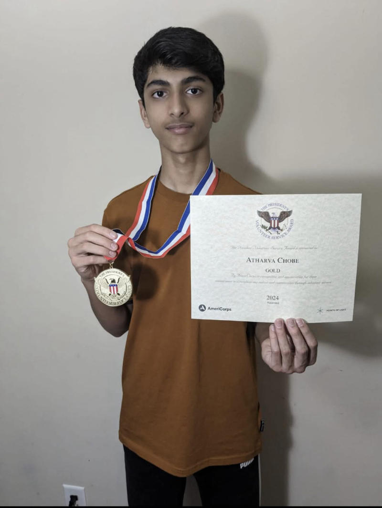
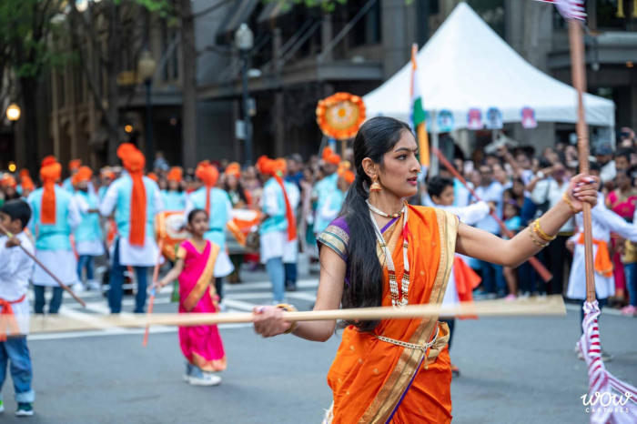

Service is central to everything we do. Alongside our cultural performances, Shivasya actively serves the greater Charlotte community year-round through impactful outreach and volunteer initiatives.
Every February, in honor of Shiv Jayanti, Shivasya hosts its annual Food Drive in partnership with the Charlotte Marathi Mandal and Second Harvest Food Bank of Metrolina. With Second Harvest translating every dollar donated into approximately seven pounds of groceries, our collective efforts have channeled more than 20,000 pounds of vital food assistance to local families facing food insecurity.
Each August, marking India's Independence Day, we organize our annual Humanity Blood Donation Drive alongside the Charlotte Marathi Mandal and the Hindu Center of Charlotte. Our drives bring the community together to save lives, with recent drives welcoming over 110 donors in a single day.
Our commitment to seva extends across every season. Shivasya regularly participates in charity 5K and 10K runs, seasonal Diwali food distributions, disaster-relief efforts during natural calamities, and civic volunteer initiatives throughout the region. Our grassroots service has been recognized and featured in regional and international outlets, including the Independent Tribune and eSakal.
Shivasya is a training ground for community leadership. Our youth members earn certified volunteer hours through our food drives, blood donation initiatives, charity runs, cultural teaching, and event logistics — often stepping forward to organize and direct major projects. We take immense pride in nurturing civic responsibility in the next generation.

Recognized by AmeriCorps and Points of Light for completing over 100 hours of certified community service, largely through Shivasya's outreach programs. Also co-established Shivasya's Lathi Kathi activity.
Recognized by AmeriCorps and Points of Light for completing over 100 hours of certified community service, largely through Shivasya's outreach programs.
Recognized by AmeriCorps and Points of Light for completing over 100 hours of certified community service, largely through Shivasya's outreach programs.

For three years, Jaanvi has led our Shiv Jayanti food donation drive — coordinating with the Second Harvest Food Bank and 18+ collection centers — and led the Humanity Blood Donation Drive (110 donors). She also co-established Shivasya's Lathi Kathi activity with Atharva Chobe.